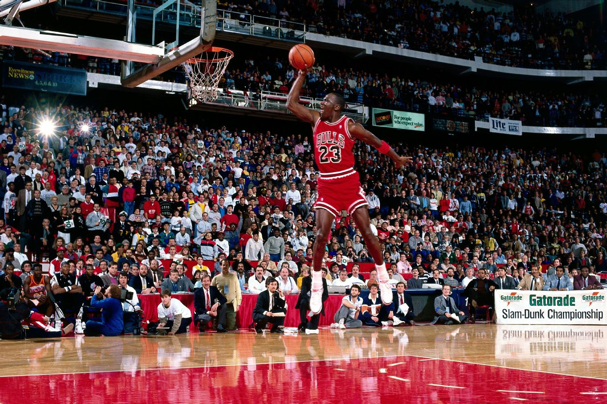

This photograph is a historic moment where Michael Jordan dunked from the free throw line in the 1988 NBA Dunk Contest. The image represents how photography preserves important moments in NBA history and basketball culture as a whole.
View the original ESPN collection